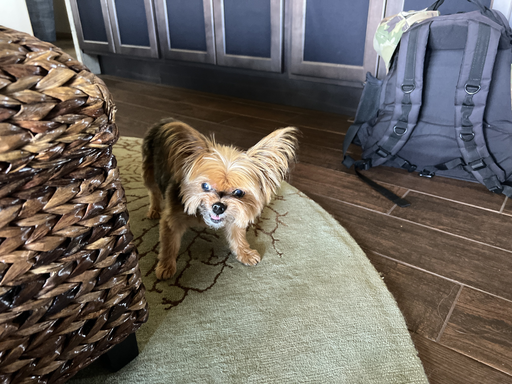
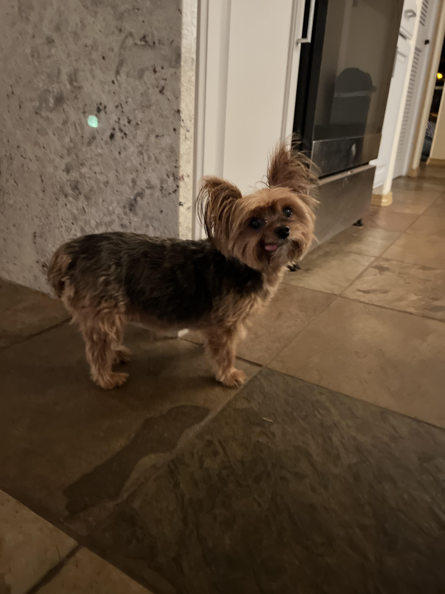
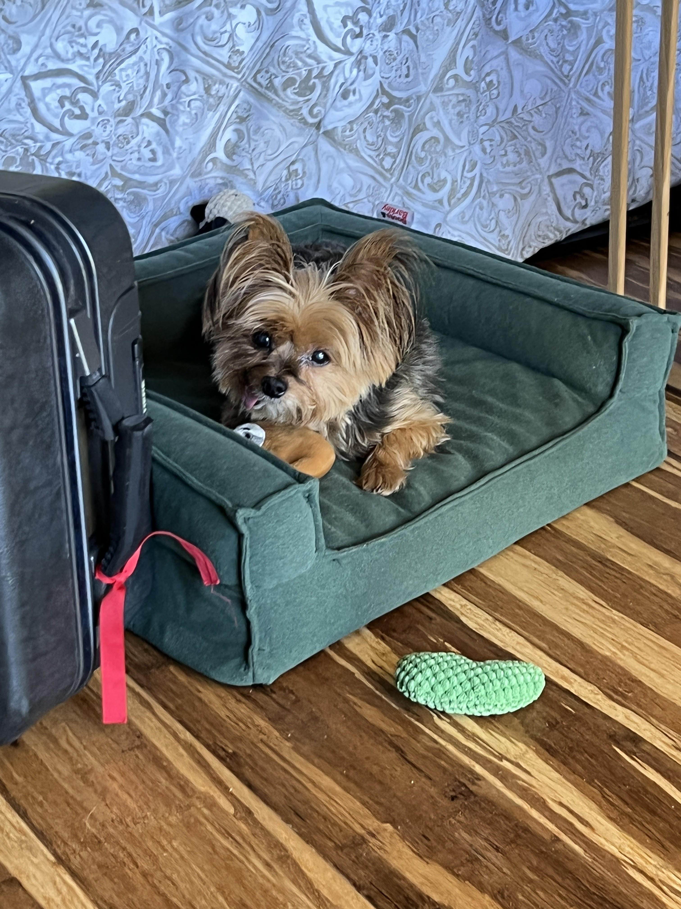

Kalista Shankle
Born on February 9th, 2010, she is a full Yorkie.
Her full name means "beautiful one" in Greek, but she goes by Kali for short.
The middle dog of the Shankle household.

Kali is a dog who loves her space, and it's rare to see her angry.
When she gets annoyed, the quiet Kali we all know will turn scary and attack!
This only happens when she's hiding her toy or when Kanani is playing around.

With very little teeth left, her tongue sticks out just about always.
This helps create her derpy personality everyone loves.

Sometimes, she will explore the outdoors.
But ultimately, home is her safe place! Most of her day is spent laying in bed.

Protective over her toys, she will lay in one of her many beds with any of them.
Her favorite toy is a small cow, an animal that shares many similarities with Kali herself.

Kali and Sadie enjoying the summer sunset, taking selfies while the others play in the yard.
Kali has anxiety and gets easily frightened by new people and fast movements.
She used to avoid Sadie at all costs! Running away, yelping, and hiding.
Now she comes right up for pets and jumps in Sadies hands when it is time to be lifted.
Sadie will admit that Kali is her favorite! Maybe becuase she played hard to get.